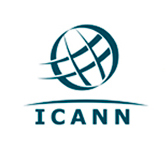

1º de Agosto, Cidade do Panamá, Panamá
Inscreva-se para o eventoÉ o desenvolvimento e aplicação pelos governos, o setor privado e a sociedade civil, em seus respectivos papéis, de princípios
compartilhados, normas, regras, processos de tomada de decisões e programas, que moldam a evolução e o uso da Internet.
 O YouthLACIGF é uma iniciativa que nasce da crescente comunidade de jovens latino-americanos interessados em questões relacionadas com a Internet. Devido ao papel mais ativo que os jovens começaram a tomar, nasce este espaço, de características multissetoriais, como um fórum de debate de novas ideias e perspectivas para incentivar a criação de linhas de discussão que serão levadas para outros fóruns .
| 1. Guilherme Alves da Silva | Brasil |
| 2. Nathaly Espitia Díaz | Colômbia |
| 3. Maia Levy Daniel | Argentina |
| 4. Sebastián Becker Castellaro | Chile |
| 5. Maria Natalia Norori Garcia | Costa Rica |
| 6. Marieliv Flores Villalobos | Peru |
| 7. Humberto Antonio Arthos Montufar | Equador |
| 8. Hernán Eduardo Albano Martínez | Uruguai |
| 9. Pamela Gonzales Apaza | Bolívia |
| 1. Pedro González Martínez | México |
| 2. Andres Oliva Casado. | Guatemala |
| 3. Fabiana María Pineda Sosa | Honduras |
| 4. Alexandre Toribio Fajardo | República Dominicana |
| 5. Anddy Francel Espinoza López | Nicaragua |
| 6. Juan José Agüero Sánchez | Paraguai |
| 7. Tulio Emilio Dávila Escalona | Venezuela |
O evento será realizado na terça-feira (1º de Agosto), terá início às 08:00 e terminará às 18:00.
Para o desenvolvimento da agenda, propomos temas-macro, que incluem sub-temas propostos pelos participantes do evento.
Os temas-macro são :
Também, entre os inscritos para o evento, realizaremos uma pequena pesquisa para conhecer os temas que lhes seria interessante discutir no evento. Os resultados serão utilizados para orientar as sessões.
City of Knowledge Fundación Ciudad del Saber, Cidade do Panamá (Panamá).
Contato: +507 306-3700
Website: ciudaddelsaber.org
Se você quiser apoiar esta iniciativa, pode nos contatar pelo email: odjuventud@gmail.com
com o assunto "YouthLACIGF APOIO", indicando como você gostaria de apoiar a nossa iniciativa.
Estamos abertos a qualquer colaboração!